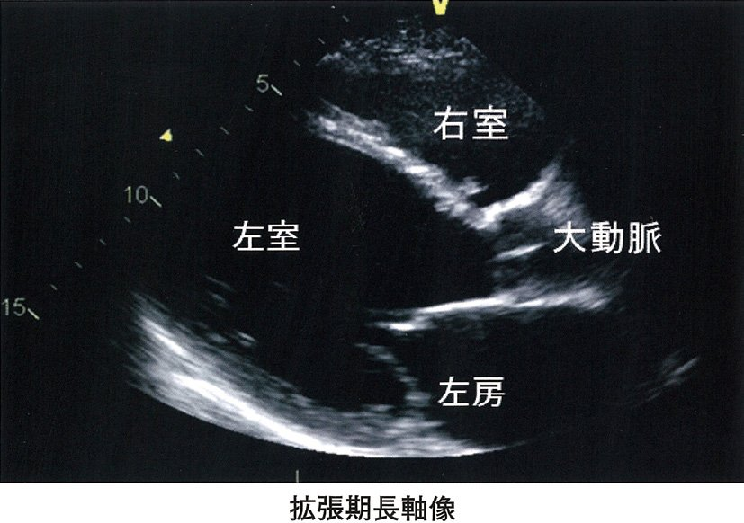
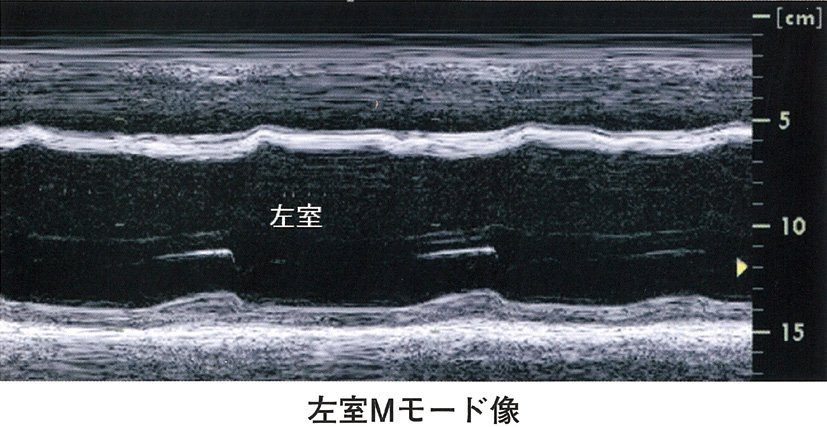
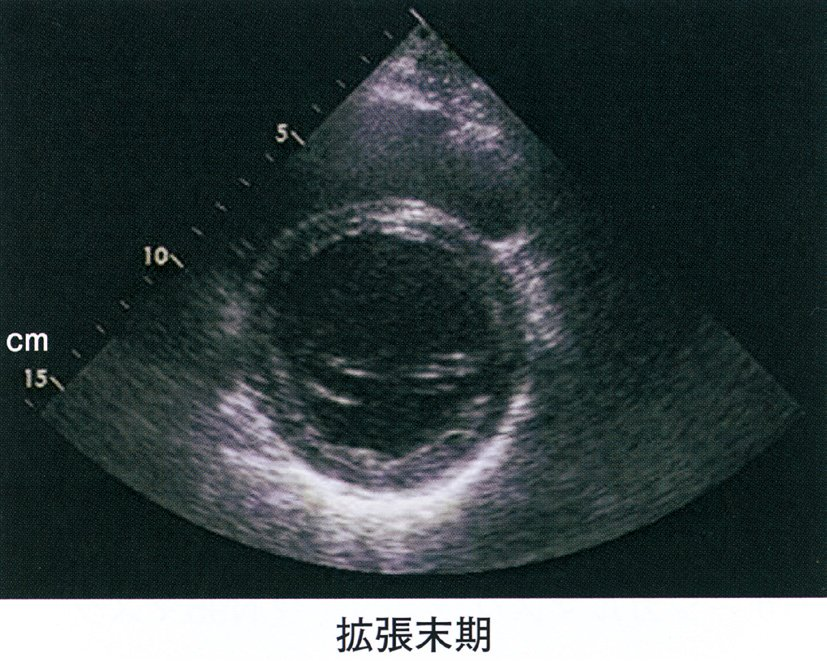
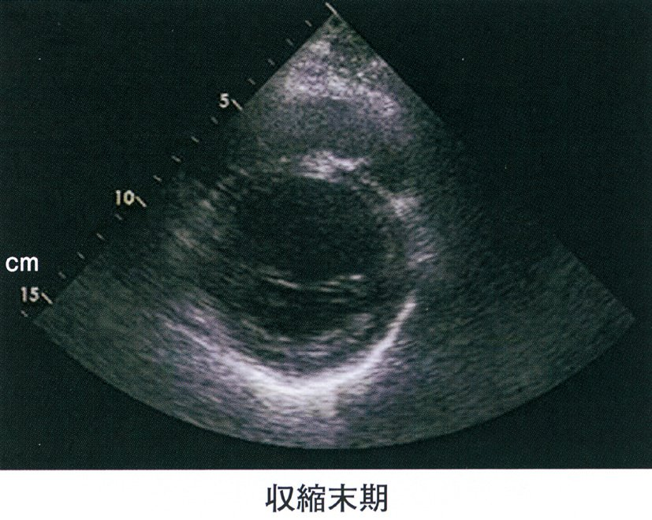
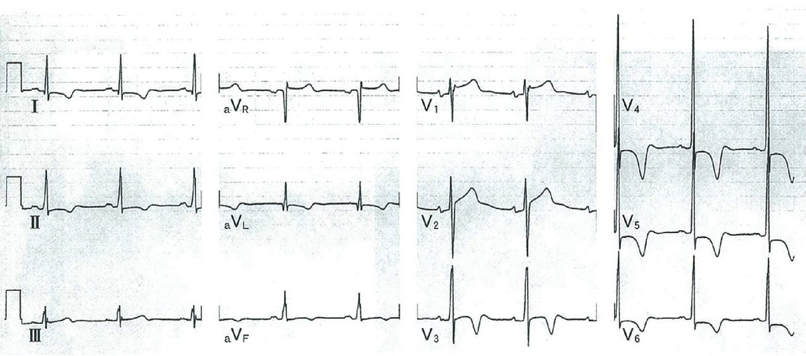
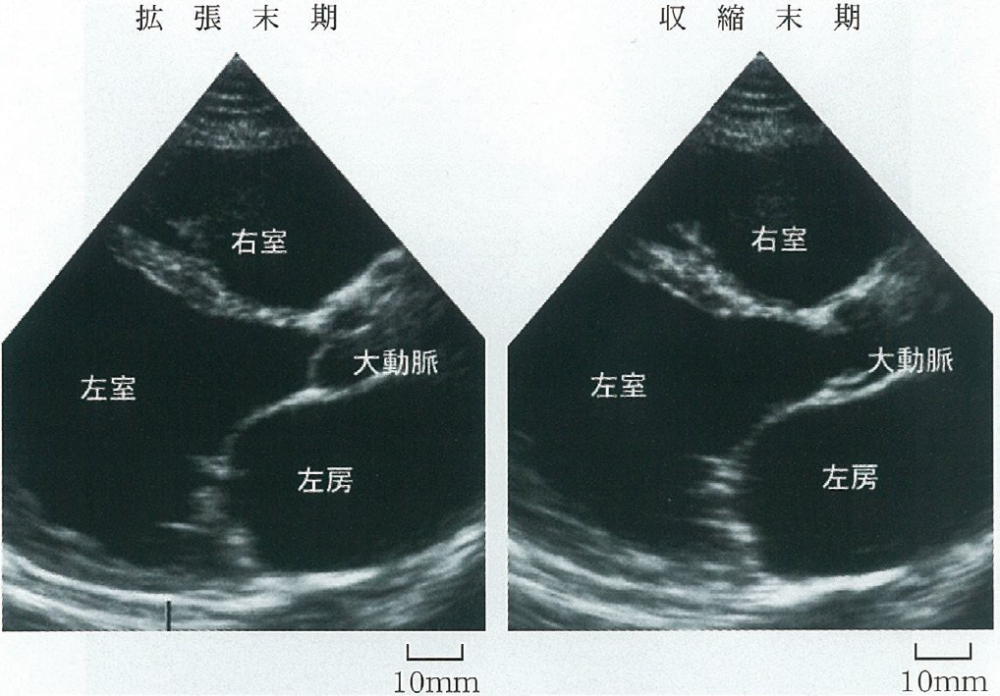

| 項目 | 内容 |
|---|---|
| 病態 | 拡張した心腔+低EF（収縮力↓） |
| 原因 | 特発性・ウイルス性・アルコール性・産褥性・遺伝性 |
| 診断 | 心エコー：LVEDD拡大・EF<40%・薄い心室壁 |
| 治療目標 | EF改善（一部）・再入院予防・突然死予防・移植待機 |
| 所見 | 内容 |
|---|---|
| ASH（非対称性中隔肥厚） | 心室中隔厚>15mm、中隔/後壁比>1.3 |
| SAM（収縮期前方運動） | 僧帽弁前尖が前方へ→MR合併 |
| 左室流出路閉塞 | 安静時または誘発時（Valsalva・亜硝酸薬） |
| 左房拡大 | 慢性MR・拡張機能障害 |
| 項目 | 内容 |
|---|---|
| 禁忌 | 安静時収縮期血圧>180mmHg、不安定狭心症、急性心不全 |
| 中止基準 | SpO2<90%、収縮期血圧>200mmHg、心拍数>目標値、胸痛・息切れ出現 |
| ×高負荷から開始 | 心事故リスク↑→必ず低強度から段階的に |
| 体調変化 | 毎回体調確認・変化に応じた処方変更が必要 |
| 増強 | 減弱 | |
| HOCM収縮期雑音 | Valsalva・立位・亜硝酸薬（前負荷↓→閉塞↑） | しゃがみ込み・握力（前負荷↑→閉塞↓） |
| 右心系雑音（TR・PS） | 吸気（右心静脈還流↑） | 呼気 |
| AR・MR拡張期（Austin Flint） | 前傾坐位・呼気 | 立位 |
| 心膜ノック音 | 収縮性心膜炎が原因 | 心タンポナーデではない |
| 連続性雑音 | 動脈管開存（PDA）・大動脈縮窄 | 大動脈弁疾患ではない |
| 所見 | 疾患 |
| ASH＋SAM | HCM/HOCM |
| 心室瘤 | 陳旧性心筋梗塞（壁菲薄化・矛盾運動） |
| 心嚢液貯留 | 心膜炎・心タンポナーデ |
| 僧帽弁狭窄 | 弁口面積縮小・doming・経度流入速度↑ |
| 左室拡大＋EF↓ | DCM（壁薄い・びまん性壁運動低下） |


| 疾患 | 鑑別点 |
| 拡張型心筋症（DCM） | 心拡大・EF↓・びまん性壁運動低下・冠動脈正常 |
| 虚血性心筋症 | 冠動脈狭窄あり・節性壁運動異常 |
| 心アミロイドーシス | granular sparkling・壁肥厚・拡張機能障害 |
| HOCM | ASH・SAM・EF正常〜過収縮 |
| ミトコンドリア脳筋症 | 神経筋疾患合併・乳酸↑ |
| DCM | 虚血性心筋症 | |
| 冠動脈 | 正常 | 有意狭窄あり |
| 壁運動異常 | びまん性 | 節性（梗塞部位） |
| 既往 | 特になし | 狭心症・心筋梗塞 |
| 心電図 | LBBB多い | 梗塞パターン（Q波・ST） |
| DCM（拡張型） | HCM（肥大型） | |
| 心臓の大きさ | 拡大（心拡大） | 正常〜縮小 |
| 壁厚 | 薄い（拡大） | 肥厚 |
| EF | <40%（低下） | 正常〜過収縮 |
| Ⅲ音 | あり（容量負荷） | 通常なし（Ⅳ音） |
| 雑音 | MR（相対的） | 収縮期駆出性雑音（HOCM） |
| 疾患 | 遺伝性 | 家族歴の意義 |
| 肥大型心筋症（HCM） | 常染色体優性 | 診断に直結（スクリーニング必須） |
| DCM | 一部遺伝性 | 参考情報（多因子） |
| 心房細動 | 一部遺伝的素因 | 弱い |
| 冠攣縮性狭心症 | 環境・自律神経 | 弱い |
| 大動脈弁狭窄症 | 老人性（石灰化） | 弱い |
| 心サルコイドーシス | 非遺伝性（肉芽腫） | 弱い |
| 急性心筋炎 | DCM | AMI | |
| 発症 | 急性（感冒後） | 慢性 | 急性（胸痛） |
| CK | 著増 | 軽度↑ | 著増 |
| 冠動脈 | 正常 | 正常 | 閉塞・狭窄 |
| AVブロック | 出現することあり | まれ | まれ（下壁梗塞） |
| 予後 | 改善例多い（劇症型は重篤） | 慢性進行 | 梗塞部固定 |
| 疾患 | 鑑別ポイント |
| ウイルス性心筋炎 | 感冒後・若年・トロポニン↑・冠動脈正常 |
| 急性心筋梗塞（AMI） | 冠危険因子・典型的胸痛・冠動脈閉塞 |
| Brugada症候群 | 電気的疾患・器質的心疾患なし・coved型ST |
| 感染性心内膜炎 | 発熱・菌血症・弁病変 |
| 肥大型心筋症（HCM） | ASH・SAM・EF正常 |
| 所見 | 急性心筋炎 | DCM（慢性） |
| 心室壁厚 | 正常〜やや肥厚（浮腫） | 菲薄化（著明） |
| 心室径 | 正常〜軽度拡大 | 著明拡大（LVEDD↑） |
| EF | 急性に低下 | もともと低下 |
| 経過 | 改善することあり | 慢性進行 |
| 状態 | 使用薬剤 |
| 心原性ショック（低血圧） | カテコラミン（ドパミン・ドブタミン） |
| 安定期HFrEF | ACE阻害薬・β遮断薬・MRA・SGLT2阻害薬 |
| 肺うっ血（血圧正常） | 利尿薬・ニトログリセリン |
| ×急性期低血圧 | β遮断薬・ACE阻害薬は禁忌 |


| 治療 | 内容 |
|---|---|
| β遮断薬 | 心拍数↓・収縮力↓→閉塞↓・拡張期充満↑ |
| 非DHP Ca拮抗薬（ベラパミル） | 収縮力↓・拡張機能改善 |
| アルコール中隔焼灼術（PTSMA） | HOCMで閉塞解除（カテーテル治療） |
| 外科的中隔心筋切除術（Morrow手術） | 重症HOCM |
| ×強心薬（ドパミン・DOB） | 禁忌：収縮力↑→閉塞悪化 |
| ×利尿薬（過剰使用） | 前負荷↓→閉塞悪化（注意が必要） |
| ×亜硝酸薬（NTG） | 前後負荷↓→閉塞悪化→禁忌（亜硝酸薬は禁忌！） |

| 検査 | 有用性 |
| 心エコー（第一選択） | ASH・SAM・圧較差測定→最重要 |
| 心電図 | 左室肥大・陰性T波・異常Q波（感度低） |
| Holter心電図 | 不整脈（VT）評価→突然死リスク |
| 心筋シンチ | 心筋虚血の評価（補助的） |
| 心カテーテル | 侵襲的→エコーで十分な場合は不要 |
| 項目 | 内容 |
| 禁忌薬 | β刺激薬・ジギタリス・硝酸薬・DHP Ca拮抗薬 |
| 推奨薬 | β遮断薬・非DHP Ca拮抗薬（ベラパミル） |
| 組織所見 | 心筋細胞錯綜配列（myocyte disarray） |
| 遺伝子 | MYH7・MYBPC3（常染色体優性） |
| 拡張機能 | LVEDP↑（拡張障害）→Ⅳ音 |

| 疾患 | Valsalva | 機序 |
| 肥大型心筋症（HOCM） | 増強 | 前負荷↓→閉塞↑ |
| MVP（僧帽弁逸脱） | 増強 | 前負荷↓→逸脱↑ |
| 大動脈弁狭窄症（AS） | 減弱 | 血流量↓ |
| 肺動脈狭窄症（PS） | 減弱 | 右心への影響 |
| VSD | 減弱 | 圧較差↓ |
| 三尖弁閉鎖不全（TR） | 減弱（吸気で増強） | 右心前負荷↓ |